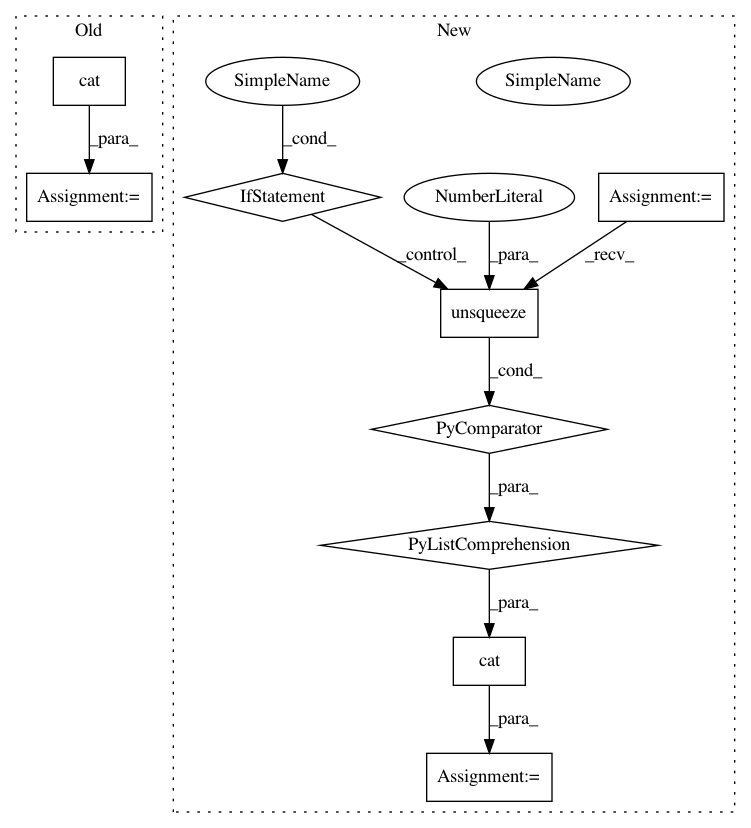

c048078187945e1defb8abc3246cd305fb038c6a,OpenNMT/onmt/Models.py,Decoder,forward,#Decoder#Any#Any#Any#,104
Before Change
output = self.dropout(output)
outputs += [output]
outputs = torch.cat(outputs)
pred = self.logsoftmax(self.decoder(outputs))
return pred
After Change
output = self.dropout(output)
outputs += [output]
outputs = torch.cat([x.unsqueeze(0) for x in outputs])
return outputs
class NMTModel(nn.Container):
In pattern: SUPERPATTERN
Frequency: 4
Non-data size: 9
Instances
Project Name: pytorch/examples
Commit Name: c048078187945e1defb8abc3246cd305fb038c6a
Time: 2017-01-11
Author: alerer@fb.com
File Name: OpenNMT/onmt/Models.py
Class Name: Decoder
Method Name: forward
Project Name: cornellius-gp/gpytorch
Commit Name: 91b0d220c8e816766fd4565e1d2f5115d3afbefe
Time: 2018-10-12
Author: gpleiss@gmail.com
File Name: test/functions/test_inv_quad_log_det.py
Class Name: TestInvQuadLogDetBatch
Method Name: test_log_det_only
Project Name: cornellius-gp/gpytorch
Commit Name: 91b0d220c8e816766fd4565e1d2f5115d3afbefe
Time: 2018-10-12
Author: gpleiss@gmail.com
File Name: test/functions/test_inv_quad_log_det.py
Class Name: TestInvQuadLogDetBatch
Method Name: test_inv_quad_log_det_many_vectors